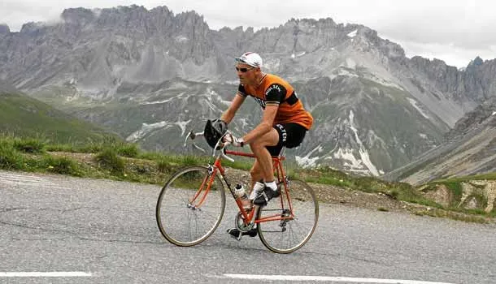
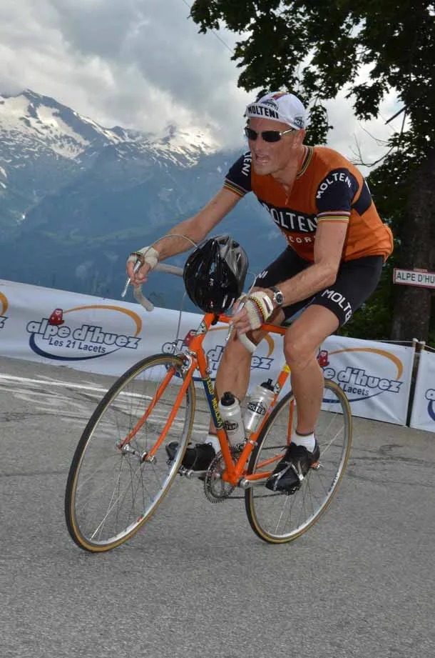

Over 4 bjerge: La Marmotte på stål og i uld

La Marmotte 2014 – 174 km og 5000 højdemeter som i 1970’erne
Vi har alle set dem. De klassiske billeder af legenderne, som slider sig op ad de mytiske bjerge på deres stålcykler og iført cykeltøj i merinould. Hvordan mon det var? Artiklens forfatter satte sig for at afprøve det – at køre La Marmotte i et 1977 setup.
Af Niels Bjørnsteen
Sent eftermiddag torsdag 3. juli trillede jeg ned ad Alpe d’Huez. Jeg ville teste, hvordan stigningen var på min Eddy Merckx Repika – og specielt, hvordan det ville være at køre den 13 km lange stigning op med 42-28, som den letteste gearing.
Vejret var skyfrit og 30 grader i Le Bourg d’Oisans – og eftermiddagssolen stod og bagte ubarmhjertigt på hylderne op mod Alpe d’Huez. Testkørslen gik ganske godt. Jeg fandt hurtigt en god rytme på de første 2-3 km med de stejle 13%.
Men en god rytme i min 42-28 gearing betød også, at jeg skød en noget hurtigere fart end mine cykelkammerater, som lå med i deres compact 34-28. Så jeg gled fra dem allerede fra starten af stigningen. Kun én af mine rejsekammerater nåede op til mig, da der var godt 2 km til toppen.
Vi fulgtes ad de sidste to km. Mit testtid blev 01:03. Den var jeg meget positivt overrasket over. Jeg kørte mig selvfølgelig ikke ud – men lå med et konstant moderat pres hele vejen. Det var rigtig godt at få testet både cyklen – og mine ben af.
Fredag var det tid til afslapning – og alt det praktiske: hente startnummer, hente og pakke depotposer og gøre cykel og cykeltøj klar. Og så skete det, der ikke måtte ske: det begyndte at regne. Pisse ned. Det regnede fra sidst på eftermiddagen – og regnede stadig, da jeg gik i seng ved 22.30-tiden.
Race day – morgen
Vækkeuret ringede kl 05.00 – og det var blevet tørvejr. Men vejene var våde. Der var udsigt til en lige lovlig spændende nedkørsel fra Alpe d’Huez til startområdet i Le Bourg d’Oisans. Efter en solid morgenmad – og en gang massage af benene – hoppede jeg i merinouldcykeltøjet, og var klar til at trille ned mod starten.
Belært af sidste års iskolde nedkørsel, havde jeg hjemme fra været en smut forbi den lokale genbrugsbutik, hvor jeg fandt mig et par termobukser og en god tyk fleecejakke, som jeg så kunne dumpe i en container ved startområdet. Turen ned gik fint. Vejen var kun en smule våd – og jeg havde det dejlig lunt.
Starten
Der er 3 startgrupper ved La Marmotte. 07.00, 07.20 og 07.50. Det er vist kun de første par hundrede startnumre, som er en egentlig seedning. Resten bliver solgt og fordelt ret tilfældigt. Jeg var kommet i sidste startgruppe.
Mine rejsekammerater var fordelt i både første og anden startgruppe. Der er nogle få meget vigtige forhold, som man skal huske ved et La Marmotte.
- Find en god gruppe på de flade stykker: På de flade stykker fra start til Glandon (10 km) og fra Saint Etienne de Cuines til Saint Michel de Maurienne (30 km) skal man finde en gruppe at ligge i. Helst én, hvor der er et par store hollændere, som gerne vil ligge forrest og agere trækdyr.
- Find din egen rytme opad på bjergene.
- Få drukket og spist: også selv om du ikke har lyst eller synes, at det er nødvendigt. Jeg fandt ikke nogen gruppe lige efter starten. Så jeg måtte selv ud i venstre side af vejen – og oftest modsatte vejbane – og lægge et pænt højt tempo. Efter 3-4 km havde jeg fået følgeskab af et par ryttere. Vi samarbejdede godt, lå på 38-40 km/t – og susede forbi den endeløse række af ryttere på vej mod Col du Glandon.
Col du Glandon – 21,3 km, 1462 hm, snit 7%, 1924 moh
Jeg havde gode og friske ben da jeg ramte Col du Glandon. Det er en kategori HC-stigning på godt 21 km og med en stigningsprocent på godt 7% i gennemsnit. Glandon er blid i starten, hvor der køres jævnt opad i et skovområde.
Halvvejs kommer der en lille by og en lille nedkørsel. Herefter går det noget mere barskt opad. Næsten alle ryttere lå med deres compact-gearing i 34/36-28 og havde et let tråd. Men et let tråd i dén gearing giver heller ikke meget fart. Jeg lå i 42-26 og holdt en god fart hele vejen opad. Jeg lå konstant og overhalede i yderste venstre side af vejen.


Reaktionerne
Jeg fik mange positive tilkendegivelser og kommentarer vedrørende min cykel og outfit. Ikke kun på Glandon, men hele løbet igennem. Utallige gange fik jeg ”tommelfingeren op-tegnet” og et ”nice bike”.
Jeg kan dele kommentarerne ind i tre kategorier:
- Den ene kategori var fra dem, som overhalede mig og kom med overskud og glimt i øjet – og smilende sagde ”respect”, ”nice bike”, ”well done on that”, ”woow – retro” eller lignende.
- Den anden kategori var fra dem, som jeg overhalede – der med et lidt slukket blik i øjnene – kom med kommentarer på fransk, spansk, hollandsk, belgisk og italiensk, som jeg selvfølgelig ikke forstod ret meget af, udover ”Columbus”, ”Molteni”, ”Merckx”. Der kom ligeledes også flere variationer af det engelske ”incredible”, som jeg kunne forstå.
- Den sidste kategori var selvfølgelig fra de mange danske ryttere. De kunne af gode grunde ikke se, hvor jeg kom fra. Rigtig mange kom med ”respect”, ”nice bike”. Af de helt gode kommentarer fra danskere, som jeg overhalede var: ”hold nu kæft – så du det … så kan vi lære det!”, ”se der – det er sku en gammel stålcykel … og uldtøj … det er sku for vildt” og den bedste ”1..2..3..4..5..6 … han sidder sku’ kun med en 6-speed”.
Jeg kom op på toppen af Glandon med rigtig gode ben – kun 1:51:43 efter start.
Tiden stoppes på toppen af Glandon. Nedkørslen er for farlig – og er derfor neutraliseret. Jeg kørte lige igennem det officielle depot på toppen af Glandon – og ca 2 km ned, hvor jeg havde depotposer hos PP Cycling. Jeg fik tanket mine to 0,5 liter dunke op med energidrik, drak en halv cola og stoppede en plastikpose fra det lokale supermarked i Alpe d’Huez ind på maven.
Nedkørslen mod Saint Colomban des Villards tog jeg stille og roligt. Vejen er meget ujævn, hælder den forkerte vej i nogle sving, og halvvejs nede var vejen tilmed våd på helt ny sort asfalt!
Dalen
I Saint Colomban des Villards starter tidtagningen igen. Her starter også godt 30 km relativt flad kørsel i dalen frem mod Col de Telegraph og Col de Galibier.
Jeg lå igen alene. Enten skulle jeg vente og satse på, at der kom en gruppe bagfra, som kørte en god fart, eller så skulle jeg give den fuld gas og køre på til en stor gruppe, som lå godt 500 meter længere fremme. Det så ud til at gruppen havde god fart på – så det ville blive hårdt.
Midt i mine overvejelser kom der en stor hollænder, selvfølgelig i Rabobank outfit, forbi. Han havde to spaniere med sig i slipstrømmen. Her hægtede jeg mig på.
Så gik det ellers gennem dalen for fulde gardiner. Den store hollænder trak som et diesellokomotiv – og vi indhentede hurtigt den store gruppe foran. Men hollænderen fortsatte. Han var på fartpilot. I det store felt var der en håndfuld, som hoppede med på vores tog. Jeg sad inde midt i og lavede ikke andet end af få spist og drukket, så jeg var klar til de to kommende bjerge.
Col du Telegraph – 11,8 km, 856 hm, snit 6%, 1536 moh
I Saint Michel de Maurienne drejes der skarpt til venstre, under en en viadukt – og dér står der to vejskilte: ”Col du Telegraph 14” og ”Col du Galibier 36”. Så er der serveret..! Col du Telegraph er ”kun” en kategori 1 stigning.
Stigningsprocenterne er lidt mildere end sidste halvdel af Glandon. Men i år var Telegraph betydelig hårdere end nogensinde; store dele af asfalten var raspet i overfladen. Derudover var temperaturen vel sidst i tyverne og solen bagte.
Ved det første vanddepot valgte jeg at tage hjelmen af, hænge den på styret og gennemvæde min kasket. Jeg havde både god rytme og fart op ad Telegraph – men det er ikke en stigning, man kører sig ud på. For efter kun 4-5 km nedkørsel ligger Valloire, der er porten til vejen direkte op i himlen. Op til Col du Galibier.
Col de Galibier 18,3 km, 1100 hm, snit 7%, 2662 moh
Lige efter Valloire går det ubønhørligt opad. En snorlige og bred vej, som ligger i læ og i bagende varme. Stigningen er vel omkring de 10%.
For enden af denne lede stigning ligger Valloire-depotet. Det er overfyldt af ivrige ryttere, som skal have fyldt lommer og dunke, inden de tager hul på de sidste 16 km stigning mod Galibier.
Samtidig er det også her, at der ses en masse ryttere siddende eller liggende ved følgebiler eller i vejsiden. Deres blikke er tomme. Opgivende.
Jeg overhørte en dansk rytter, som sad i grøften og talte i mobiltelefon: ”Peters baghjul er gået i stykker – så vi bliver nødt til at udgå…” Jeg tænkte med det samme på Velominati’s rule #5!
Jeg fik lige fanget mig et kvart flüte og 4-5 skiver skinke, lidt rent vand i den ene dunk og energi i den anden. Lidt koldt vand ned ad nakken – og i kasketten – og så rullede jeg videre. Der gik ikke længe, så ramte jeg et fantastisk flow. God stabil rytme i det tunge gear og en langsom, men dyb vejrtrækning.
Solen var forsvundet bag skyerne – og jeg kunne mærke, at det blev køligere. Min motor var dog varm og kørte optimalt. Da vejen på et tidspunkt fladede lidt ud, rejste jeg mig op, smed kæden op på stor klinge og kørte 52-26. Da var det, at jeg hørte to englændere, som jeg overhalede i høj fart, sige ”holy shit … it’s not about the material”.
De sidste fem kilometer på Galibier er hårde for alle. Her er rytterne møre, og her tager stigningsprocenterne for alvor fat. Rytterne ligger hylde over hylde i det golde landskab. Mange rammer store kriser eller muren.
Jeg havde det godt, men da jeg skulle ind på de sidste 3 km, kunne jeg mærke, at der lå en krampe på lur i begge baglår. Jeg satte farten ned til ”damage control” – og stod op i pedalerne det meste af de sidste 2 km.
På toppen kørte jeg lige gennem det officielle depot og ca. 1 km ned til PP Cyclings depot. Her stod 3 af mine rejsekammerater. Én havde haft stor krise på Galibier og en anden havde haft 2 punkteringer og så forståeligt nok lidt slukøret ud. Jeg fik tanket energi i dunkene, fyldt nogle gels i lommerne og fik spist en muffin. Jeg bundede også en cola og en lille pakke rosiner. Jeg var klar til 50 km nedkørsel.
Nedkørslen
Nedkørslen fra Galibier er en fantastisk oplevelse. Det er en god vej. Lange bløde kurver og sving med godt udsyn. Mine Velofelx Master 23 mm dæk sang – og var super gode i kurverne.
Mine gamle Campagnolo Nouvo Rekord bremser klarede det fint. De var lette at dosere. Jeg havde dog valgt at skifte de originale Campagnolo bremseklodser til Koolstop. De bremsede rigtig godt, men havde det med at hyle, når de blev meget varme.
Et par gange oplevede jeg også, at de tog lige lovlig fat, når de var meget varme. Hastigheden kommer over 70 km/t flere steder på nedkørslen. Jeg ved det fra sidste år, hvor jeg kørte på Canondale SuperSix og GPS-ur. I år havde jeg selvfølgelig ikke cykelcomputer på – eller andet nymodens udstyr. Men jeg kørte bestemt ikke langsommere. Tværtimod. Jeg gav den gas nedad.
De sidste 20 km inden Bourg d’Oisans-dalen kommer man gennem et hav af tunneller. Et par af dem er meget mørke – og hvis man ikke lige når at få solbrillerne ned på næsen, kan det gå helt galt. Jeg ramte PP Cyclings depot et par kilometer før foden af Alpe d’Huez. Efter et kort stop – en cola og påfyldning af dunke – kørte jeg mod Alpe d’Huez stigningen.
Alpe d’Huez – 13,2 km, 1120 hm, snit 8%, 1840 moh


Jeg var lidt urolig for, at min begyndende krampe fra Galbier ville komme igen – og sætte sig. Ved foden af stigningen kørte jeg ind til siden og satte min hjelm på styret.
Alpe d’Huez stigningen, med sine berømte 21 sving, starter lige på og hårdt med over 10%. Der var fuld sol – og varmt som i en pizzaovn. Jeg mærkede med det samme, at mine ben faktisk var ret gode, og jeg kom overraskende godt gennem de første stejle 2-3 km – og efter sving 16, hvor vejen flader lidt ud, fik jeg rigtig god fart i cyklen og lå og overhalede konstant.
Da jeg nåede sving 5 kunne jeg begynde at mærke, at der var en krampe på vej. Men denne gang ikke i baglåret. Jeg kunne mærke – og rent faktisk se – at en del af lårmusklen bulede indad. Jeg blev nødt til at stå lidt op, men det gav ikke nogen virkning. Jeg satte mig ned igen. Rykkede lidt længere frem på sadlen og trådte nu 100% med det ene ben og 70% med det ben, hvor krampen så småt var begyndt. Det virkede, og krampen aftog.
Da der var godt 3 km igen, kunne jeg sætte lidt ekstra fart på igen. Jeg trillede over målstregen klokken lidt i fem.
Epilog
Det er altid en stor oplevelse at køre et løb som La Marmotte. Og det var en fantastisk oplevelse at køre det på 1977-setup. Min Eddy Merckx Replika kørte utrolig godt. Den var virkelig god at klatre på. Min bekymring om mit letteste gear på 42-28 gear ville være for tungt i længden forsvandt hurtigt. Det tungere gear bevirkede blot, at jeg kørte stærkere.
Mit Molteni-tøj i merinould var ikke varmt. Det er en fordom, at uld er varmt i varmen. Det sved- og vandvåde uld havde faktisk en let kølende effekt – samtidig med, at jeg ikke følte mig våd på kroppen. Fantastisk materiale.
Ideen med at køre med en våd kasket er genial. Jeg fornemmede, at jeg kørte godt. Jeg havde ingen kriser – og jeg kunne kontrollere de snigende kramper. Jeg kørte med almindeligt armbåndsur – så jeg kunne kun se, at jeg kom i mål klokken lidt i fem.
Jeg vidste, at jeg ca. var kørt over startlinjen klokken 08.00. Jeg havde dog ingen anelse om, hvor lang tid jeg havde brugt på nedkørslen fra Glandon – altså den tid, som skulle fratrækkes for at få køretiden. Først ca. 1,5 time efter så jeg det officielle resultat: 08:17:38. Det var sku vildt. Året før kørte jeg 08.21:38 på min Cannondale SuperSix. Jeg havde revet 4 minutter af – endda på vintagecykel.
It’s not about the material…!
Data:
- Cykel: Eddy Merckx Replika, 1977, fuld Campagnolo Nouvo Record, 10,3 kg.
- Hjul: Campagnolo Nouvo Record nav, DT Swiss 0,8 eger, Mavic Open fælge (2013 model).
- Gruppe: Campagnolo Nouvo Record
- Cockpit: 3TTT Compezitione
- Gearing: 53/42 – 13-28
- Dæk: Veloflex Master 23 mm dæk.
- Trøje og bukser: Molteni Arcore, merinould fra Wollistick (vintagevelos.com).
- Væske: ca 8 x 0,5 liter + 2 cola’er
- Energi: 1 pakke Dextro, 4 små pakker rosiner, 7 gels og én muffins